聊天管理後台系統架構設計與完成度總覽
Monorepo 架構，client / server / shared / e2e 四層分離，透過根層 concurrently 統一管理開發與部署。
前端 SPA → Vite Proxy → Express API → SQLite，Production 模式由 Express 直接 serve 前端靜態檔案
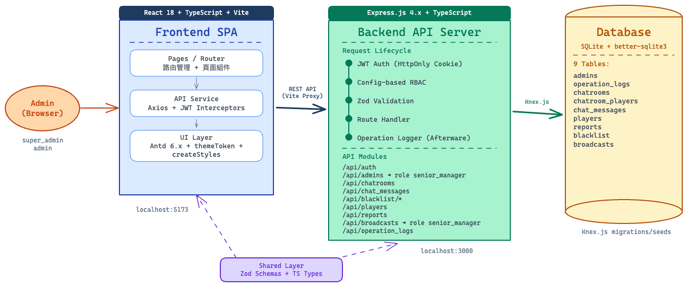
9 個後端模組全部遵循 Route → Controller → Service 三層分離，透過工廠注入模式傳遞 DB 依賴。
createXxxRoutes(db: Knex): Router 工廠函式，顯式傳遞 DB
依賴，不使用全域單例。Integration test 可直接傳入 :memory: SQLite 實例。
:memory: 模式讓每個測試檔案擁有獨立 DB 實例
createXxxRoutes(db) 傳入 Knex 實例，切換 DB
只需改 knexfile.ts 的 client 設定:memory: vs Production 使用
file DB，證明抽象層無洩漏
{ "success": true,
"data": { ... } }
{ "success": false,
"error": {
"code": "AUTH_...",
"message": "..."
}
}
{ "success": true,
"data": [...],
"pagination": {
"page": 1,
"total": 100
}
}
React 18 SPA，10 個頁面依權限動態渲染，Design System 支援 Dark / Light / System 三態切換。
| Route | Page | Permission | Description |
|---|---|---|---|
| /login | LoginPage | Public | 帳號密碼登入 + 已登入自動跳轉 |
| /chat | ChatMonitoringPage | chat:read | 訊息監控 + 刪除 + 封鎖 + 暱稱重設 |
| /blacklist | BlacklistPage | blacklist:read | Player / IP 封鎖管理 + 新增 Modal |
| /chatrooms | ChatroomPage | chatroom:read | 聊天室列表（唯讀）+ 搜尋 |
| /broadcasts | BroadcastPage | broadcast:read | 發送廣播 + 狀態標籤 + 下架 |
| /operation-logs | OperationLogPage | operation_log:read | 操作紀錄篩選 + request JSON 展開 |
| /reports | ReportReviewPage | report:read | 檢舉審核（核准自動封鎖） |
| /nickname-reviews | NicknameReviewPage | nickname:read | 暱稱審核（駁回自動重設） |
| /admins | ManagerPage | admin:read | 帳號管理（角色/密碼/啟停用） |
| /* | NotFoundPage | Public | 404 頁面（在 AdminLayout 內顯示） |
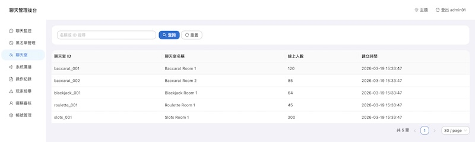
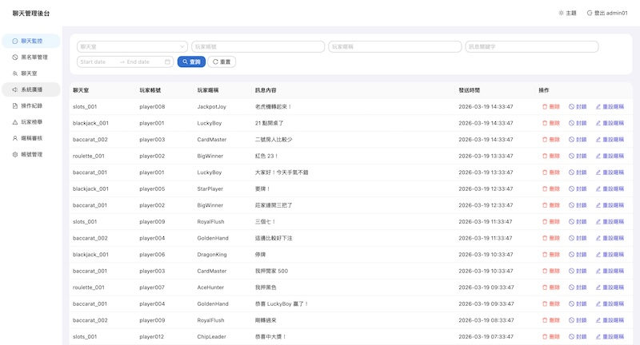
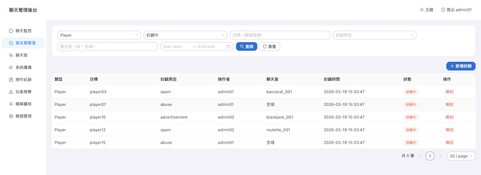
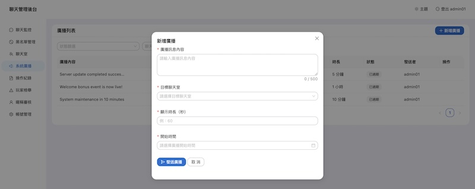
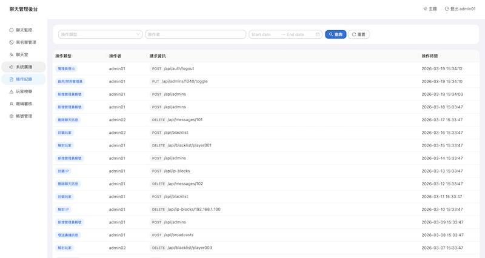
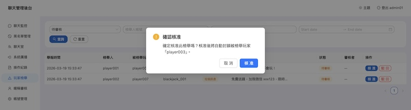
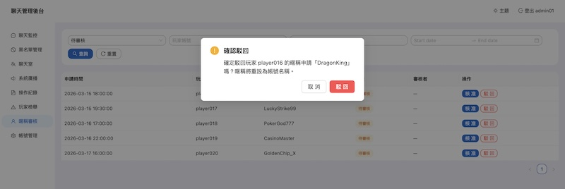
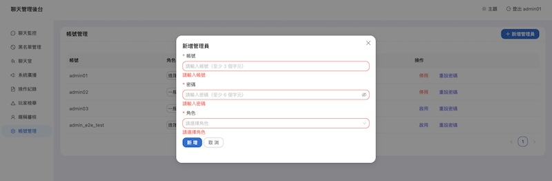
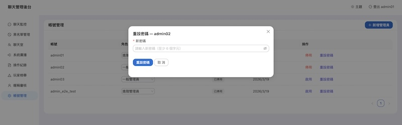
9 張資料表、14 個 migration、三種刪除策略。SQLite 零配置，Knex.js 抽象層讓未來可切換 DB。
9 張資料表的欄位結構與關聯關係
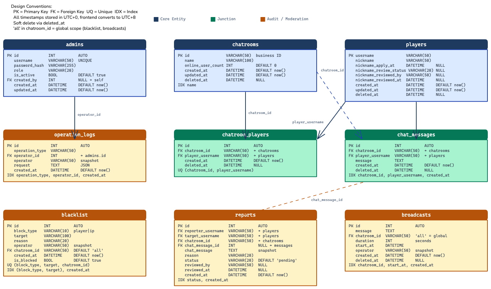
| Table | PK Type | Purpose | Delete Strategy | RFC |
|---|---|---|---|---|
| admins | INT AUTO | 管理員帳號（角色、狀態） | — | rfc_01 |
| operation_logs | INT AUTO | 操作稽核紀錄（request JSON） | 不可刪除 | rfc_02 |
| chatrooms | VARCHAR(50) | 聊天室列表（業務 ID） | deleted_at | rfc_03 |
| players | VARCHAR(50) | 玩家帳號（含暱稱審核欄位） | deleted_at | rfc_03 |
| chatroom_players | INT AUTO | 聊天室 ↔ 玩家多對多關聯 | deleted_at | rfc_03 |
| chat_messages | INT AUTO | 聊天訊息（軟刪除） | deleted_at | rfc_03 |
| blacklist | INT AUTO | 玩家/IP 封鎖（統一表） | is_blocked | rfc_04 |
| reports | INT AUTO | 玩家檢舉審核 | 不可刪除 | rfc_05 |
| broadcasts | INT AUTO | 系統廣播（動態計算 status） | deleted_at | rfc_06 |
Config-Based RBAC：22 項權限 × 2 角色，前後端雙重守衛，無需額外 DB 表。
| Category | Permission | General | Senior |
|---|---|---|---|
| auth | auth:change_own_password | ✓ | ✓ |
| chat | chat:read / chat:delete | ✓ | ✓ |
| blacklist | blacklist:read / create / delete | ✓ | ✓ |
| ip_block | ip_block:read / create / delete | ✓ | ✓ |
| chatroom | chatroom:read | ✓ | ✓ |
| operation_log | operation_log:read | ✓ | ✓ |
| report | report:read / review | ✓ | ✓ |
| nickname | nickname:read / review | ✓ | ✓ |
| player | player:reset_nickname | ✓ | ✓ |
| admin | admin:read / create / toggle / reset_password | — | ✓ |
| broadcast | broadcast:read / create / delete | — | ✓ |
requirePermission() middleware 在 route
層級強制驗證 → ② 前端 ProtectedRoute 阻擋無權限頁面 → ③ Sidebar
menuItems.filter() 隱藏無權限選單項目
三層測試金字塔 — Unit / Integration / Component / E2E，:memory: SQLite 與 production 同引擎。
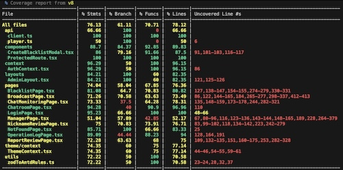
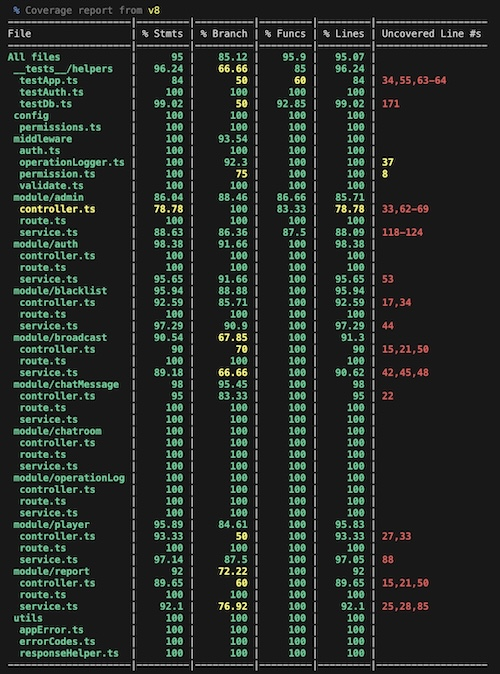
| Resource | Server Vitest | Client Vitest | E2E (Playwright) |
|---|---|---|---|
| Database | :memory: SQLite | 無 | dev.sqlite（resetDb） |
| HTTP | supertest（不佔 port） | 無 | dev server（3000 + 5173） |
| 隔離性 | 完全隔離 | 完全隔離 | 共用 dev DB |
video: 'on' 錄影，測試完成後 compose-video.ts 將 .webm 片段轉為
MP4 + 燒入 SRT 字幕 + 插入標題卡 + 串接合成 output/demo.mp4。一份 E2E
測試同時達成 CI 品質保障 + 功能展示影片。
12 個開發 Phase 全部完成，9 個功能模組全部上線，涵蓋原始需求的所有功能項目。
E2E 測試自動錄製的系統操作展示影片，涵蓋主要功能流程。
由 Playwright E2E 測試自動錄製，經 compose-video.ts 合成
以下為系統正式上線後的完整優化規劃，按優先級排序。涵蓋安全加固、即時通訊升級、UI/UX 優化、 資料庫遷移等面向，每個階段包含具體技術方案、量化效益指標與風險評估。
express-rate-limit — 登入 5 次/分鐘/IP，全域 API 100
次/分鐘failed_attempts +
locked_until 欄位，5 次失敗鎖定 15 分鐘helmet middleware — 自動設定
X-Content-Type-Options、X-Frame-Options、
Content-Security-Policy、Strict-Transport-Security 等標頭Socket.IO — 自動降級 polling、內建 reconnect 與 room
機制socketManager.ts 掛載於 Express HTTP server，JWT 驗證
middlewarechat:message / chat:delete /
admin:action / player:statususeSocket hook +
SocketContext，頁面卸載自動 disconnectnode-cache 快取 RBAC 權限設定（長 TTL）+
黑名單查詢（30s TTL）del(key) 清除對應快取，避免髒讀。 operationLogger afterware
作為觸發點，確保 cache 與 DB 一致性NProgress 頂部進度條framer-motion list animationmessage 帶圖標，2 秒自動消失responsive breakpoint）aria-label，表單元件確保 label 關聯react-virtuoso 虛擬滾動，僅渲染可視區域React.lazy + Suspense 拆分 code
splitting，首屏只載入當前頁面useDeferredValue 防止高頻 re-render[e2e] 時觸發 Playwright on
CISQLITE_BUSY 錯誤，
或單表資料量超過 50 萬筆查詢回應 >200mschat_messages(chatroom_id, created_at) — 聊天室訊息時序查詢blacklist(target_type, target) — 黑名單比對operation_logs(created_at) — 操作日誌時間範圍查詢reports(status, created_at) — 待處理檢舉篩選EXPLAIN QUERY PLAN 驗證命中